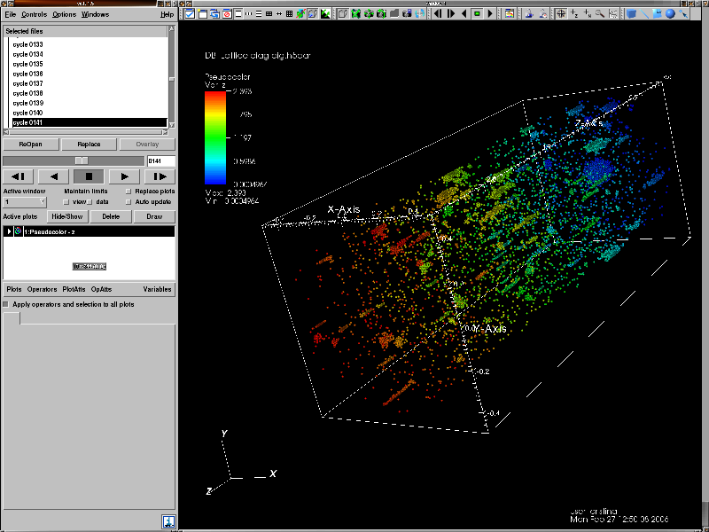
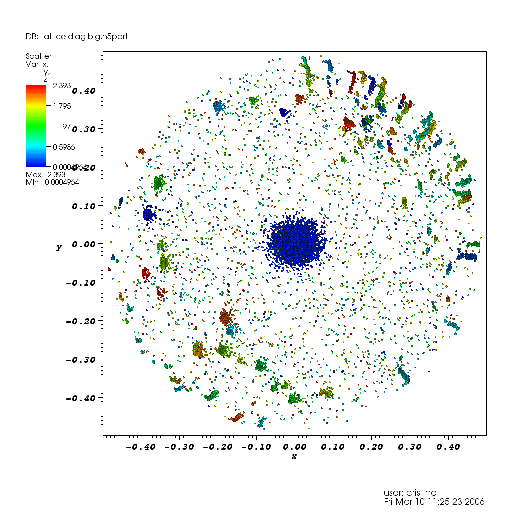
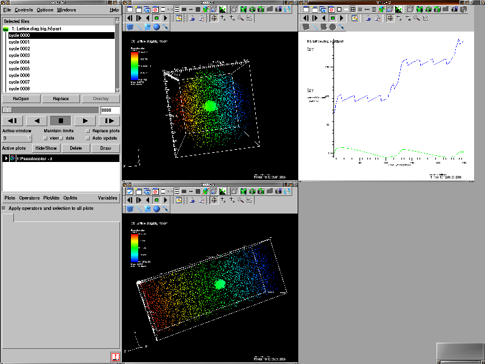

H5Part: VisIt Plugins
Introduction
VisIt is an open source point-and-click 3D scientific visualization application that supports most of the common visualization techniques on structured and unstructured grids. One of its advantages is that it employs a distributed and parallel architecture in order to handle extremely large data sets interactively. VisIt's rendering and data processing capabilities are split into viewer and engine components that may be distributed across multiple machines. See this link for details on how to run VisIt in NERSC.
VisIt achieves extensibility through the use of dynamically loaded plugins. All of VisIt's plots, operators, and database readers are implemented as plugins and are loaded at run-time from the plugin directory. New plugins can be added simply by installing them in this directory. VisIt comes with a graphical plugin creation tool, which greatly simplifies the process of creating new plugins. The user describes the properties of the plugin and then the tool generates most of the code necessary to implement the plugin. For example, in the case of an operator, the plugin creation tool creates the code necessary for the graphical user interface attribute window; the C++, Python, and Java interfaces; and the code necessary to interface to VisIt. The only code you need to write is the C++ code that actually performs the operation.
H5Part in VisIt
Database Reader Plugin
We wrote a Multiple Time Step Multiple Domain database reader to read H5Part data into VisIt. H5Part datasets should be named with the extension ".h5part" to be recognized by the reader since VisIt does not have a format selection mechanism at the time of reading. Figure 1 shows a Pseudocolor plot of a data set and Figure 2 shows a Scatter plot x-y (any combination of x, px, y, py, z, pz, id are possible).
|  |
| Figure 1. VisIt User interface showing an H5Part particle file rendered as spheres using the Pseudocolor plot. |
|  |
| Figure 2. A Scatter plot of the x-y projection of the particles. |
{kind=link}
{kind=link}
VisIt provides a Query interface, for single time steps and for time series. Figure 3 shows the query interace over time for the sum of the x position and the z position of the particoes.
|  |
| Figure 3. VisIt's Time Query Output. |
{kind=link}
Operator Plugins
Particle Random Sampler
Particle Binner